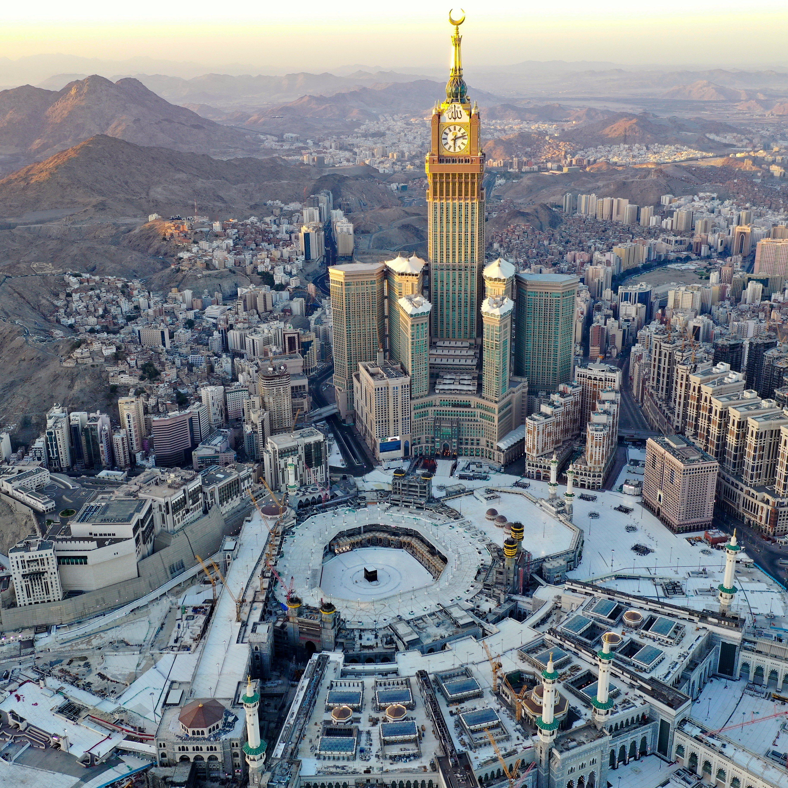
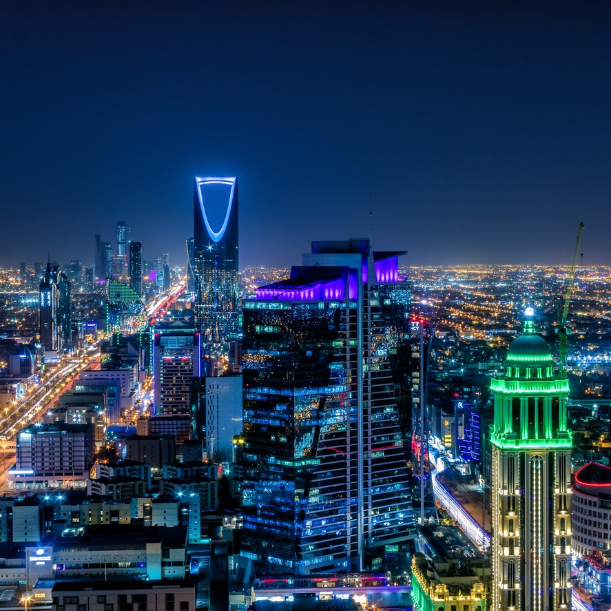

Saudi Arabia
Exploring the Enigmatic Kingdom's Hidden Gems
My journey begins in Riyadh, the capital city of Saudi Arabia. Here, I delve into the contrasting facets of the city, starting with a visit to the towering Kingdom Centre Tower. At its summit, I marveled at the panoramic views of Riyadh's modern skyline, a testament to the country's rapid development. Later, I explored the historic Al-Masmak Fortress, which offers a glimpse into Saudi Arabia's storied past. My day concluded with a mesmerizing stroll through the bustling Souq Al Zal, where the aromas of spices and the vibrant colors of textiles painted an enchanting scene.
 From Riyadh, I headed west to the coastal city of Jeddah, the gateway to the Red Sea. The Corniche promenade beckoned, and I couldn't resist a relaxing afternoon by the waterfront, with the salty breeze and the sound of crashing waves as my companions. Snorkeling in the coral reefs off Obhur Beach was an unforgettable adventure, as I swam alongside an astonishing array of marine life. And of course, I couldn't leave Jeddah without experiencing the city's rich cultural heritage, which I did at the Al-Balad historical district, where centuries-old buildings transport you back in time.
Leaving the coast behind, I ventured into the Asir region, where Abha awaited with its cool mountain air and lush landscapes. The Habala Village, perched atop towering cliffs, provided a glimpse into the ancient way of life of the Asiri people. I indulged in the traditional cuisine at the Al-Soudah Park, feasting on local dishes while surrounded by the breathtaking Asir Mountains. A cable car ride to the Abha Dam showcased the region's stunning vistas, leaving me in awe of Saudi Arabia's diverse geography.
A journey into the heart of history took me to Al Ula, home to the spectacular Madain Saleh, a UNESCO World Heritage site. Exploring these ancient Nabatean tombs carved into rose-red cliffs, I felt a deep connection to the past. I ventured further into the desert, embarking on an exhilarating 4x4 off-road tour through the stunning Al Ula desert, where I witnessed the striking landscapes of sculpted sandstone formations, known as the Elephant Rock and the towering Jabal Ikmah.
 Najran, an oasis city in the southern part of Saudi Arabia, beckoned with its historical treasures. The Al-Ukhdood archaeological site unveiled the remnants of a once-thriving civilization, while the Al-Ukhdood Museum provided valuable insights into Najran's rich heritage. A visit to the traditional Souq Okaz transported me back to ancient Arabian marketplaces, where the echoes of bustling trade still lingered.
The eastern province of Saudi Arabia offered its own charm, and Dammam was my gateway to explore it. A boat tour through Half Moon Bay allowed me to witness the stunning lunar-like landscapes of the Khobar coastline. I ventured into the desert once more, this time on a camel-back expedition through the vast Rub' al Khali, or Empty Quarter, marveling at the endless dunes that stretched before me.
No journey through Saudi Arabia would be complete without a visit to Medina, the second holiest city in Islam. Here, I experienced a deep sense of tranquility and spirituality as I visited the Prophet's Mosque, a place of profound reverence for Muslims worldwide. My journey ended with a heartfelt pilgrimage to the Quba Mosque, a site believed to be the first mosque built by Prophet Muhammad.
As I wrap up my journey through the enchanting kingdom of Saudi Arabia, I am left with a profound sense of awe and gratitude. This land, known for its desert landscapes and ancient history, has revealed to me a tapestry of experiences that rival even the most captivating adventures in the Americas. From the bustling modernity of Riyadh to the ancient wonders of Al Ula, from the serene spirituality of Medina to the natural beauty of Abha, Saudi Arabia has proven to be a treasure trove of exploration.
My travels through this enigmatic kingdom have not only broadened my horizons but also deepened my appreciation for the diversity and richness of the world we live in. Just as my American adventures have ignited a desire for exploration in the hearts of my readers, I hope that my journey through Saudi Arabia will inspire others to embark on their own quests for discovery. As the sands of Saudi Arabia recede in my rearview mirror, I carry with me the memories of a land where history, culture, and natural beauty converge in a truly captivating blend.